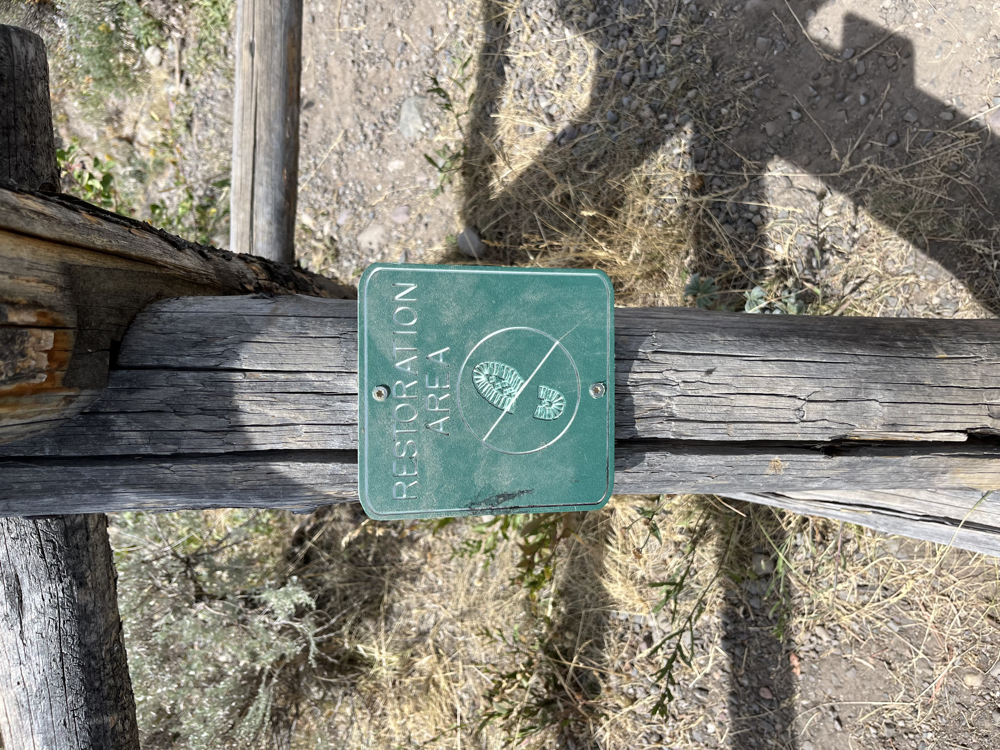
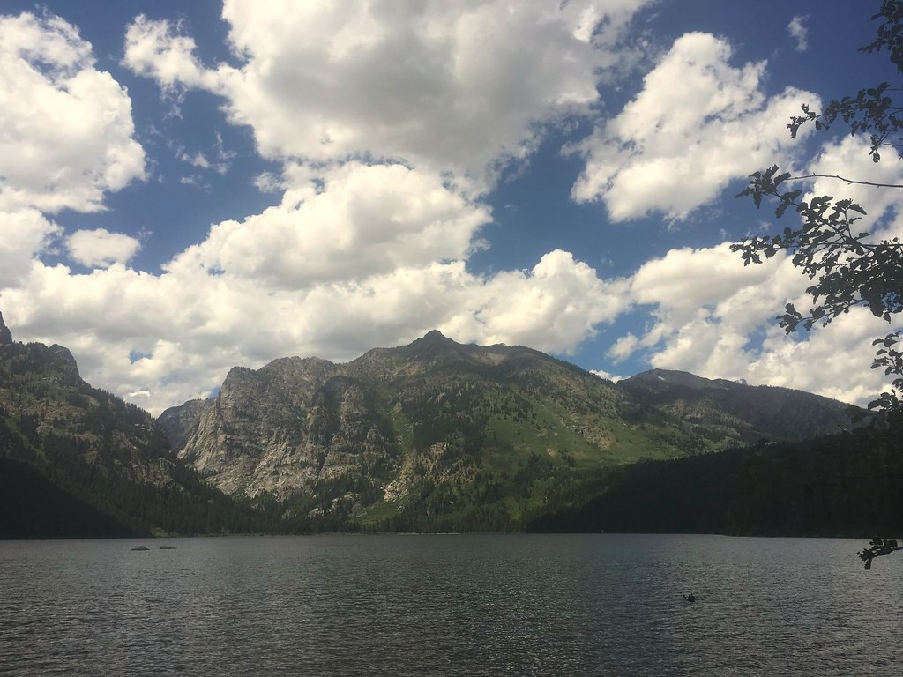
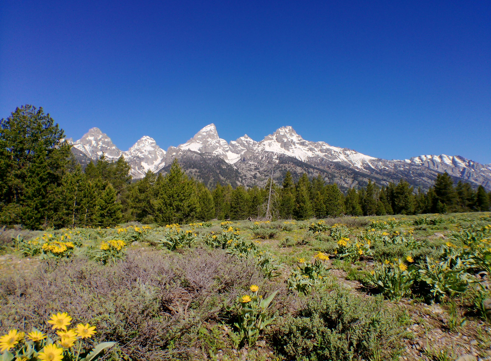

Death Canyon Trailhead
Jenny Lake Trailhead
Inspiration's Point
Granite Canoyon Trailhead
Laurance S. Rockfeller Preserve Trailhead
More Info

Day Hikes
Lake Creek-Woodland Trail Loop
1.5 Hours
3 Miles (4.8 km)
Easy
Aspen Ridge-Boulder Ridge Loop
3 Hours
5.8 Miles (9.3 km)
Moderate
Phelps Lake Trail Loop
4+ Hours
6.3 Mile (10.1 km)
Moderate

